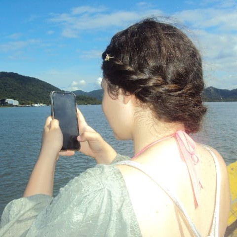

Bianca Bazoni
TÓPICOS DA PÁGINA
Sobre mim
Meu nome completo é Bianca Bazoni Macedo, nasci no dia 18/10/2010 e atualmente tenho 15 anos. Moro com meus pais na zona norte da capital de São Paulo, faço esportes como corrida de rua, vôlei e academia. Sou filha única e não tenho animais de estimação. Nos feriados e aniversários eu vou para São Caetano com meus pais para ver minha família que mora por lá. Costumo viajar bastante para o interior para ver meus tios e para a praia, que é um dos meus lugares favoitos que já fui. Gosto bastante de ler livros e ver séries. Minha cor favorita é rosa e meu passatempo favorito é correr e ler livros, ambos escutando música.


Essa sou eu atualmente.




Curiosidades sobre mim
- Meu livro favorito é "Um Ano Solitário", de Alice Oseman;
- Alguns artistas que dominam meu spotify são
- Minhas 3 músicas favoritas, em ordem, são:
- "There Are Other Ways", de Epic The Musical (Jorge Rivera-Herrans)
- "Slim Pickins", da Sabrina Carpenter
- "Birds Don't Sing", do TV Girl;
- Sou escoteira e sempre que consigo estou acampando com meu grupo;
- Adoro cozinhar, principalmente cookies e bolos;
- Antes de eu entrar no curso de tecnologia o meu sonho era fazer um intercâmbio para a França e estudar moda por lá;
- Sou completamente apaixonada por mitologia grega e seus mitos;
- Adoro musicais da Broadway e meus favoritos são "Mamma Mia!", "EPIC The Musical","Heathers" e "Wicked";


Lugares que quero visitar
Alguns dos lugares que eu desejo visitar são: (Clique nas fotos para ver seu perfil na wikipedia!)